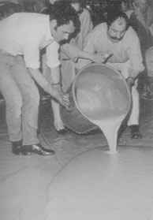
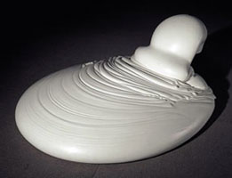
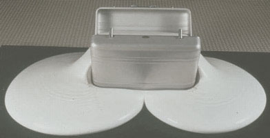
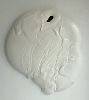
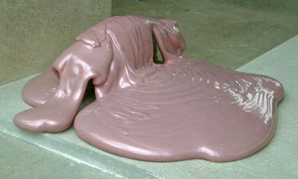
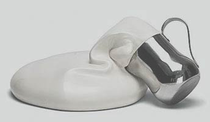
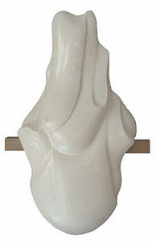
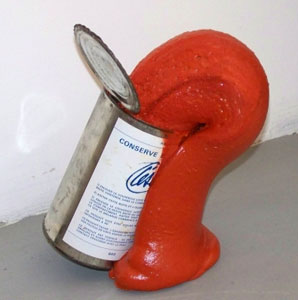
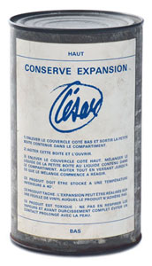
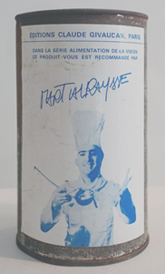

l'informe
l'informe  radical
art homepage
radical
art homepage
 l'informe
l'informe  radical
art homepage
radical
art homepage
César Baldaccini: Expansions
Expansion Jaune, 1967

César pouring polyurethane, 1967
Expansion Performance. Rome, 1968.
1968
1968

Expansion No. 14, 1970
Valise Expansion, 1970
Sans Titre, 1970

Expansion No. 35 (Rose), 1971

Expansion Crème
Expansion Murale, 1975
Conserve Expansion, 1969. (Edition of 800 do-it-yourself polyurethane expansion cans.
Éditions Claude Givaucan, Paris. Series Alimentation de la Vision. Recommended by Martial Raysse.)  
"In 1968 César established himself as the modern demigod of polyurethane, the inspired pioneer of industrial chemistry." "The world's most celebrated modern art museums are proud today to boast expansions by César among their collections. These mounds of brightly coloured solid foam have the definitive beauty of organically free forms, and their occupation of space is the pure and simple result of a chemical process carried to completion."Pierre Restany: "César and the poetry of industrial chemistry." Domus 462 (August 1968)